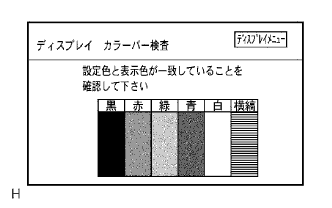
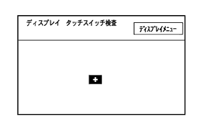
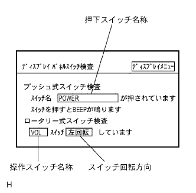
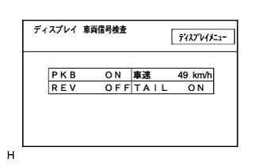
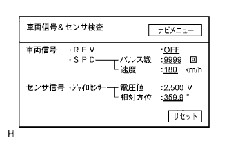
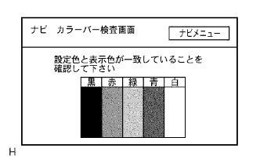
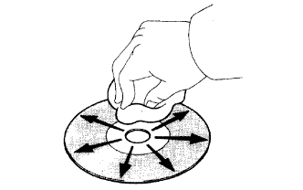

参照。
参照。DVDナビゲーションシステム 機能点検 |
| 1. ディスプレイカラーバー検査 |
参照。ダイアグノーシス起動
ダイアグノーシスを起動し、ダイアグ検査メニュー画面を表示させる。(要領は参照)
ダイアグ検査メニュー画面の“ディスプレイ検査”を選択して、ディスプレイ検査メニュー画面を表示させる。
ディスプレイ検査メニュー画面の“カラーバー検査”を選択して、ディスプレイカラーバー検査画面を表示させる。
|  |
ディスプレイカラーバー検査
設定色と表示色が一致していることを確認する。
ナビカラーバー検査の表示色と比較し、相違がないことを確認する。
| 2. ディスプレイタッチスイッチ検査 |
参照。ダイアグノーシス起動
ダイアグノーシスを起動し、ダイアグ検査メニュー画面を表示させる。(要領は参照)
ダイアグ検査メニュー画面の“ディスプレイ検査”を選択して、ディスプレイ検査メニュー画面を表示させる。
ディスプレイ検査メニュー画面の“タッチスイッチ検査”を選択して、ディスプレイタッチスイッチ検査画面を表示させる。
|  |
ディスプレイタッチスイッチ検査
画面をタッチして、十字カーソルがタッチした場所に表示されることを確認する。
| 3. ディスプレイパネルスイッチ検査 |
参照。ダイアグノーシス起動
ダイアグノーシスを起動し、ダイアグ検査メニュー画面を表示させる。(要領は参照)
ダイアグ検査メニュー画面の“ディスプレイ検査”を選択して、ディスプレイ検査メニュー画面を表示させる。
ディスプレイ検査メニュー画面の“パネルスイッチ検査”を選択して、ディスプレイパネルスイッチ検査画面を表示させる。
|  |
パネルスイッチ検査
各スイッチを操作し、画面の表示と一致することを確認する。
| 表示 | 内容 |
|---|---|
| 押下スイッチ名称 |
|
| 操作スイッチ名称 | 操作されたロータリー式スイッチの名称を表示する(6秒間の無操作で画面表示は消去) |
| スイッチ回転方向 | 操作されたロータリー式スイッチの状態を表示する(6秒間の無操作で画面表示は消去) |
| ディスプレイメニュー | ディスプレイ検査メニュー画面を呼び出す |
| 4. ディスプレイ車両信号検査 |
参照。ダイアグノーシス検査
ダイアグノーシスを起動し、ダイアグ検査メニュー画面を表示させる。(要領は参照)
ダイアグ検査メニュー画面の“ディスプレイ検査”を選択して、ディスプレイ検査メニュー画面を表示させる。
ディスプレイ検査メニュー画面の“車両信号検査”を選択して、ディスプレイ車両信号検査画面を表示させる。
|  |
ディスプレイ車両信号検査
ディスプレイ(ナビゲーションレシーバASSY)に取り込まれている車両信号の状態を確認する。
| 項目 | 表示方法 | 信号入力端子 |
|---|---|---|
| PKB | パーキングブレーキの状態を“ON”/“OFF”で表示する(IGスイッチON時) | ナビゲーションレシーバASSY PKB(E1)端子 |
| REV | REV信号の状態を“ON”/“OFF”で表示する(IGスイッチON時) | ナビゲーションレシーバASSY REV(E5)端子 |
| 車速 | SPDのパルス信号を車速に算出して表示する | ナビゲーションレシーバASSY SPD(E3)端子 |
| TAIL | TAIL信号(ヘッドランプディマスイッチ)の状態を“ON”/“OFF”で表示する | ナビゲーションレシーバASSY ILL+(A10)端子 |
参照)| 5. 車両信号&センサ検査 |
参照。ダイアグノーシス起動
ダイアグノーシスを起動し、ダイアグ検査メニュー画面を表示させる。(要領は参照)
ダイアグ検査メニュー画面の“ナビ検査”を選択して、ナビ検査メニュー画面を表示させる。
ナビ検査メニュー画面の“車両信号&センサ検査”を選択して、車両信号&センサ検査画面を表示させる。
|  |
車両信号&センサ検査
| 項目 | 表示方法 | 信号入力端子 |
|---|---|---|
| REV信号状態 | REV信号の状態を“ON”/“OFF”で表示する(IGスイッチON時) | ナビゲーションレシーバASSY REV(E5)端子 |
| SPD信号状態 | SPD信号状態を表示する(この画面表示後の入力パルス数の累計および車速[km/h]) | ナビゲーションレシーバASSY SPD(E3)端子 |
| ジャイロセンサ出力状態 | ジャイロセンサの出力状態を表示する(電圧値[V]およびこの画面表示後の方位の変化量[度]) | - |
| リセット | ジャイロセンサの相対方位およびSPD信号のパルス数の表示項目をリセットして表示内容を“0”とする | - |
ナビゲーションレシーバASSYに取り込まれている車両信号(REV、SPD)の状態を確認する。
参照)ジャイロセンサの出力状態を確認する。
| 6. ナビカラーバー検査 |
参照。ダイアグノーシス起動
ダイアグノーシスを起動し、ダイアグ検査メニュー画面を表示させる。(要領は参照)
ダイアグ検査メニュー画面の“ナビ検査”を選択して、ナビ検査メニュー画面を表示させる。
ナビ検査メニュー画面の“カラーバー検査”を選択して、ナビカラーバー検査画面を表示させる。
|  |
ナビカラーバー検査
設定色と表示色が一致していることを確認する。
ディスプレイカラーバー検査の表示色と比較し、相違がないことを確認する。
| 7. 地図ディスククリーニング |
|  |
クリーニング
ディスクの汚れは、プラスチックレンズ用メガネふきなどの柔らかく乾いた布で、中心から外側へ放射状方向に軽く拭いて清掃する。
| 8. コーション画面点検(ナビゲーションコーション画面表示時) |
コーション画面のメッセージに従い処置を行う。
| コーションメッセージ | 原因 | 点検箇所 |
|---|---|---|
| 地図ディスクが入っていません地図ディスクを入れてください | 地図ディスクが挿入されていない | 正しい地図ディスクを挿入する |
| 地図ディスクが正しく読めません地図ディスクの傷、汚れをご確認ください | 地図ディスクに傷、汚れなどがあり、正常にデータが読めない | 地図ディスク清掃 |
| 地図データが読めません地図ディスクが正しいかご確認ください | 地図ディスク以外を挿入した | 正しい地図ディスクを挿入する |
| プレーヤが高温の為地図データが読めません | プレーヤのピックアップ部が高温になった |
|
| 地図データが読めません販売店にご相談ください | プレーヤが一時的に地図ディスクからデータを読めない |
|
| 9. ナビゲーション案内音声設定確認(案内音声不鳴時) |
設定点検
メニュー画面の音声設定で、音量を最大に設定する。
| 10. ジャイロ初期化確認(自車位置マーク回転時) |
再操作
IGスイッチをOFF→ONにする。